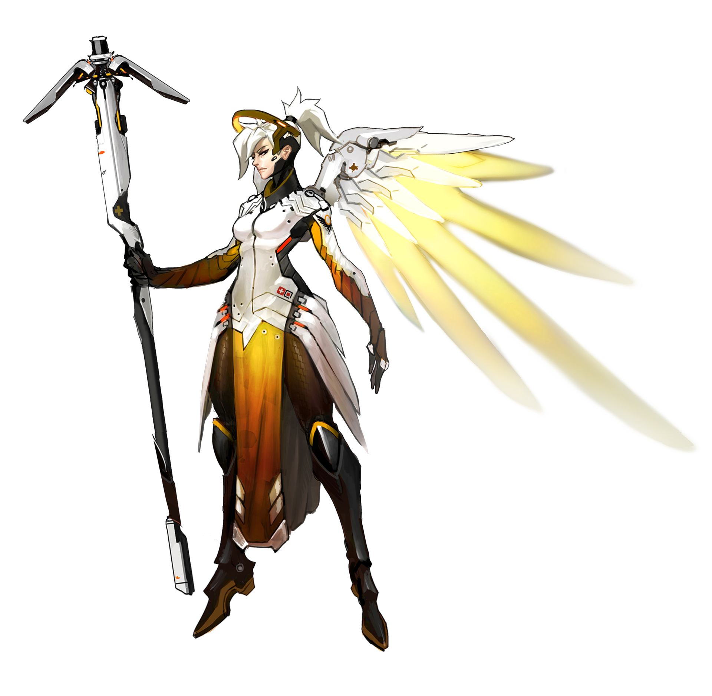
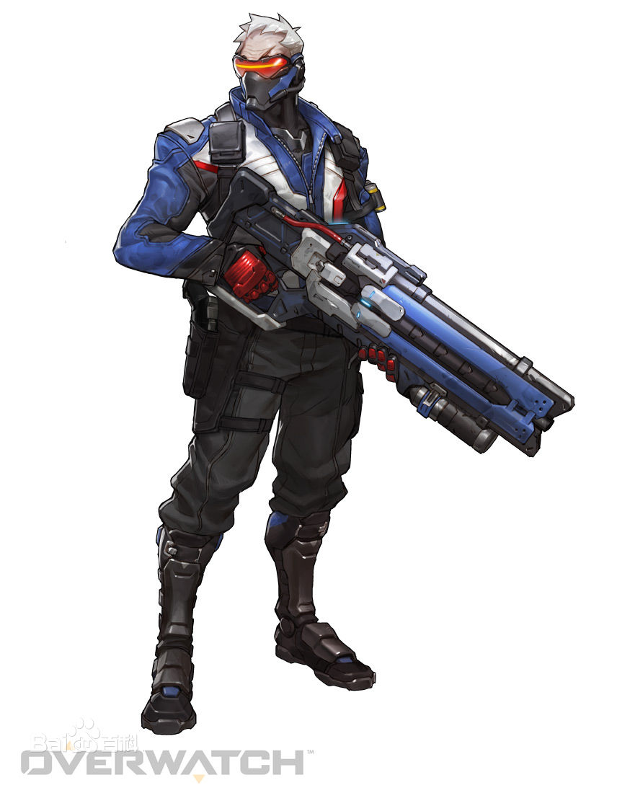
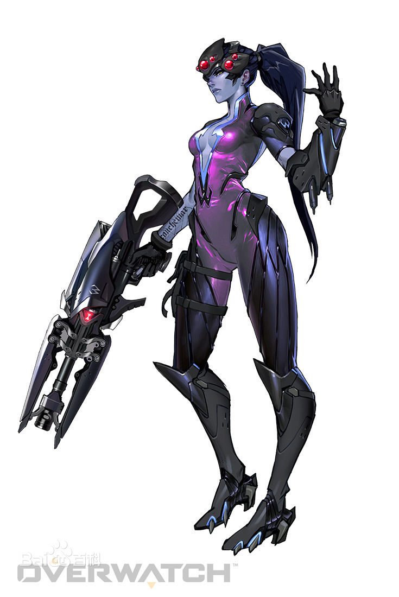
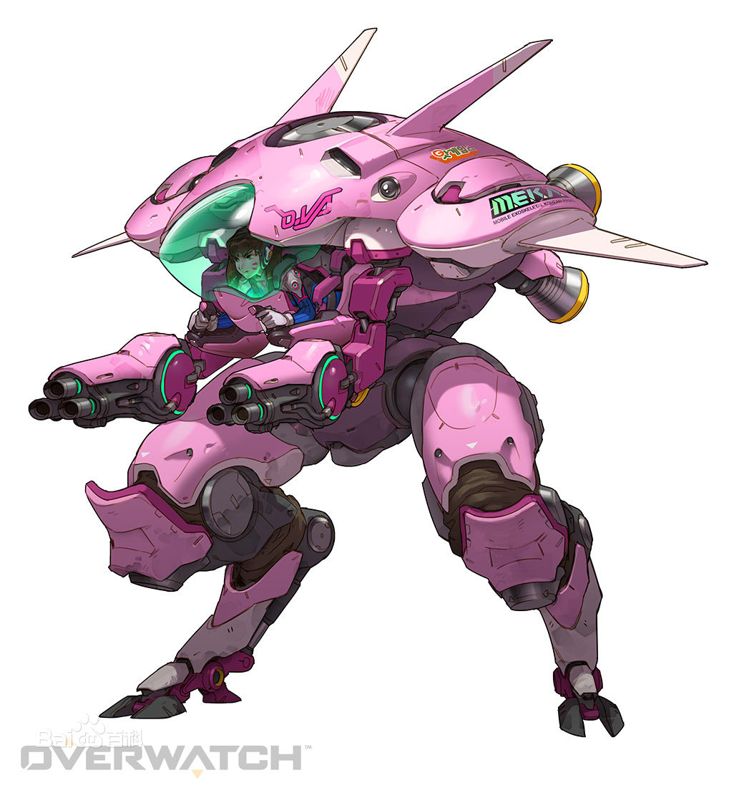

守望先锋
天使-有我看着你呢

简介
全称：安吉拉·齐格勒，年龄：37岁
职业：战地医师、特派急救员
行动基地：瑞士，苏黎世
隶属：（前）守望先锋成员
“有我看着你呢！”
作为所有伤者的守护天使，安吉拉•齐格勒博士是一名顶尖的治疗者、出色的科学家和坚定的和平主义者。
齐格勒在踏入可以极大改善致命疾病和损伤治疗效果的突破性应用纳米生物学领域之前，是瑞士一家顶尖医院的手术部门负责人。正是她在医学领域的成就，引起了守望先锋的注意。
由于齐格勒的双亲都被战争夺走了生命，因此她从一开始就极其反对该组织通过军事手段进行维和。但最终，她意识到守望先锋给她提供了一个可以拯救更多人生命的机会。作为守望先锋医学研究部门的负责人，安吉拉致力于更好地在前线治疗受到致命伤的病员。“女武神”快速反应作战服因此诞生，齐格勒也穿着这套作战服参加了许多守望先锋的任务。
尽管她对守望先锋做出了巨大的贡献，但齐格勒博士经常质疑她的上司以及守望先锋的长远目标。而当守望先锋解散之后，齐格勒博士便致力于帮助那些受战争波及的受难者。
尽管她大部分时间都在全球各地帮助那些流离失所、无依无靠的难民，但当无辜人民遇到危险时，齐格勒博士依然会穿着她的“女武神”作战服挺身而出。
士兵：76-现在我们都是士兵了

简介
全称：杰克·莫里森，年龄：49岁
职业：未知
行动基地：未知
隶属：（前）守望先锋成员
“我们现在都是士兵了。”
被全球通缉的独行侠“士兵：76”独自一人发动了一场旨在查出守望先锋解散真相的战争。
“士兵：76”在全球一系列针对金融机构、秘密集团和守望先锋基地的袭击活动中被曝光。尽管外界至今不清楚他的动机是什么，但有人认为他曾是一位守望先锋特工，决心查出守望先锋垮台的幕后黑手。
虽然他的真实身份依旧是个谜，但据信他曾参加过美国的“士兵强化计划”并接受过专业训练。他的身体条件远超一般的士兵，再加上某些方面的强化使他成为了一名顶尖的战斗人员。此外，他还拥有许多从前守望先锋基地窃取的划时代武器。
在查出守望先锋垮台的幕后阴谋之前，“士兵：76”不会停下。
黑百合-一枪，一个

简介
全称：艾米丽·拉克瓦，年龄：33岁
职业：刺客
行动基地：法国，安纳西
隶属：黑爪
“一枪，一个。”
“黑百合”是一位完美的杀手：耐心、果断、无情。没有任何情感且事后毫无悔意。
根据资料描述，“黑百合”在成为如今的杀手之前，曾与杰哈·拉克瓦结婚。杰哈·拉克瓦的真实身份是守望先锋在对抗恐怖组织“黑爪”的一系列行动中的先锋探员。在多次刺杀杰哈无果之后，黑爪决定将目标转向他的妻子，艾米丽。黑爪特工绑架了艾米丽并对其进行了一项高强度神经重构计划。他们击垮了她的意志，抑制了其本身的人性，将其变成了一个潜伏特工。她最终被守望先锋探员找到并在确认无致命伤之后重新过上了以前的生活。
两周之后，她杀死了睡梦中的杰哈。
完成任务之后，艾米丽回归了黑爪，而他们也最终完成了将艾米丽变为一个活体武器的计划。她接受了高强度的隐秘行动训练，生理结构也被进行了调整，心跳速率大幅降低，体温骤降的同时皮肤也变成了冰冷的蓝色并且再也无法感受到人类情感。曾经的艾米丽已经彻底消失了。
现在，“黑百合”成为了黑爪最强大的杀手，只有在完美完成一项任务之后才会感到些许的满足。
D.Va-玩游戏就是要赢

简介
全称：宋哈娜，年龄：19岁
职业：（前）职业玩家，机甲驾驶员
行动基地：韩国，釜山
隶属：韩国陆军特别机动部队
“玩游戏就是要赢。”
D.Va曾是一名职业玩家，而现在则利用自己的技巧驾驶一台尖端机甲保卫国家。
二十年前，韩国遭到一台从东海出现的巨型机甲怪兽的攻击。这台怪物在被击退前对多个沿海城市造成了毁灭性的破坏。为了应对这一威胁，韩国政府部署了一支机械化无人机部队“MEKA”，用以应对未来的智能机械威胁、保卫城市。
随着一系列袭击事件的不断发生，韩国政府最担心的事情还是发生了。每过几年，那台巨型机械怪兽就会从海中出现袭击韩国和邻国。这台智能机械可以从每一次的遭遇战中学习，使用新武器和能力并且以不同形态出现。尽管韩国每次都能成功将其击退，但这台智能机械并未被彻底摧毁。
随着智能机械不断进化，它最终干扰了MEKA的无人机控制网络，迫使军方派驾驶员驾驶这些机甲。由于难以找到合适的候选人，政府开始向那些拥有足以操控机甲尖端武器系统的必要反应和本能的国内职业玩家寻求帮助，其中就包括顶尖玩家之一的“D.Va”宋哈娜。作为一名为了获胜不惜一切代价的精英玩家，D.Va从来都不会对对手表现出丝毫的仁慈。
D.Va将这次新任务视为一款全新的游戏，无所畏惧地和其他MEKA机甲冲向战场，随时准备保卫自己的国家。最近，她开始向她的粉丝直播战斗行动，而这也让她成为了世界巨星。